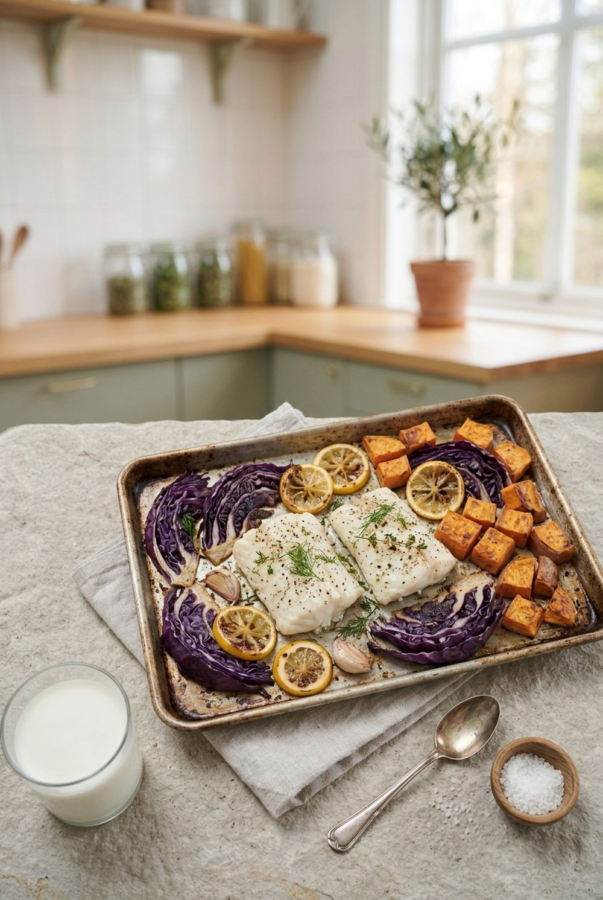

Hauptgericht · mit Fisch
Kabeljau vom Blech mit Rotkohl und Süßkartoffel
Ein Blech, wenig Abwasch: zarter Kabeljau mit ofengeröstetem Rotkohl und Süßkartoffel.

Nährwerte pro Portion
Eiweiß34 g
Ballaststoffe9 g
Folat139 µg
Magnesium92 mg
Zutaten für 2 Portionen
- 300 g Kabeljaufilet (2 Stücke)
- 1 Süßkartoffel (ca. 350 g)
- 250 g Rotkohl
- 1 rote Zwiebel
- 2 EL Olivenöl
- 1 TL Kreuzkümmel oder Thymian
- ½ Zitrone
- 100 g Naturjoghurt
- 1 EL Petersilie
- Salz, Pfeffer
Enthält: Fisch, Milch. Nährwerte berechnet mit dem Bundeslebensmittelschlüssel (BLS 4.0), 502 kcal · 53 g Kohlenhydrate · 14 g Fett pro Portion.
Zubereitung
- Backofen auf 210 °C Ober-/Unterhitze vorheizen. Süßkartoffel in Spalten, Rotkohl in feine Streifen, Zwiebel in Spalten schneiden.
- Gemüse mit 1 ½ EL Öl, Gewürz und Salz mischen, auf einem Blech verteilen und 20 Minuten rösten.
- Kabeljau salzen, mit restlichem Öl beträufeln und mit Zitronenscheiben belegen. Zwischen das Gemüse legen und weitere 12–15 Minuten garen, bis er sich in Lamellen zupfen lässt.
- Joghurt mit etwas Zitronensaft und Salz verrühren und mit Petersilie zum Blech servieren.
Statt Kabeljau passen Seelachs oder Lachs.
Mehr aus der App
Dieses Rezept stammt aus der WellANNI-App (Foto KI-generiert). Dort findest du über 200 geprüfte Rezepte, planst deine Woche für den ganzen Haushalt samt Einkaufsliste und siehst, was dein Teller schon geliefert hat.
WellANNI App holenPassende Kollektion: Herbst & Winter